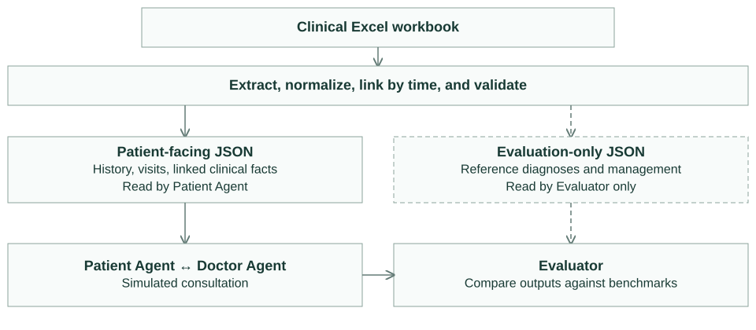

Clinical data workflow
One extraction workflow produces patient-accessible clinical facts and separate evaluation benchmarks.
The reusable tool reads prenatal clinical Excel workbooks, applies explicit extraction and naming rules, preserves source details, organizes records by dates and gestational age, and produces JSON and a readable workbook. Clinical facts, patient-facing visit content, and evaluation labels are stored separately. The source tool is packaged as a Codex skill with Python scripts and validation routines.

This small synthetic case demonstrates source tracing, timeline links, and output structure. It does not represent performance across all hospital workbook formats. The underlying implementation and scoring rules remain in the private development repository.
Trace a record to its source
Select a record to highlight its original workbook rows and inspect the generated JSON.
Source workbook
SYNTHETIC_DEMO.xlsx · original row numbersPatient-facing JSON
Clinical records and linked visit contentVisit benchmark
Reference for the selected visitFollow the visit timeline
Each visit points to clinical facts and has a separate evaluation reference.